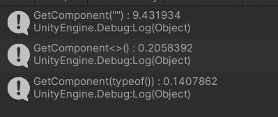

Unity脚本中的性能优化(1)
考虑到暑期实习或许会有这方面的能力需求，这几天在看《Unity游戏优化》这本书，先简单谈一下该书第二章中提到的部分Unity脚本中的性能优化
GetComponent
GetComponent其官方文档描述如下：
Returns the component of Type
typeif the game object has one attached, null if it doesn’t.
Using gameObject.GetComponent will return the first component that is found and the order is undefined. If you expect there to be more than one component of the same type, use gameObject.GetComponents instead, and cycle through the returned components testing for some unique property.
简而言之，就是获取某物体上的某一指定组件，其返回值为指定类型的Component
该方法有三种可用的重载版本：
1 | GetComponent(string) |
为测试其性能，我编写了如下代码：
1 | const int numTests = 1000000; |
其中Time.realtimeSinceStartup为从游戏启动时开始现在经历过的真实时间，且受到timeScale所控制，不依赖游戏时间，而是系统时间。
运行结果如下：

两个基于类型的版本明显要比string版本快速许多，因而要避免使用GetComponent(string)
MonoBehaviour中的空回调函数
Unity中编写脚本的主要意义是从MonoBehaviour继承的类中编写回调函数，下图为MonoBehaviour的生命周期

对于性能优化来说，即使回调函数体是空的，Unity仍然会挂接到相应的回调中，从而浪费少量的CPU。当项目持续开发，一个场景内充斥着成百上千乃至上万个MonoBehaviour和大量的空回调函数定义，就会导致场景的初始化变慢。
这种调用通常发生在关键的游戏事件中：例如两个对象发生碰撞，可能会长生一个粒子效果，播放音效等，这对性能很关键，因为CPU秃然需要进行许多复杂更改，但在当前帧结束前只有有限时间完成这些改动。如若花费过长时间就可能导致掉帧，因为在所有update()回调完成之前，渲染管线不允许呈现新帧。
或许读者会认为一个场景并不会出现那么多的对象，可是MonoBehaviour包含Update()回调，而不是GameObjects，单个GameObject可以同时包含多个MonoBehaviour，而它们的每个子对象可以包含更多的MonoBehaviour，以此类推，便会造成显著的影响。
解决方法即将空的回调定义删除，这样Unity将没有可以挂接的回调，可以通过一下的正则表达式来快速查找空白的回调定义：
1 | void\s*Update\s*?\(\s*?\)\s*?\n*?\{\n*?\s*?\} |
Update
在Unity脚本中，性能问题最常见的来源是在Update()回调中，进行以下操作：
①反复计算很少或从不改变的值
②太多的组件计算一个可以共享的结果
③执行工作的频率远超于必要值
Update()中的任何代码，都会消耗帧速率预算，要达到60FPS，每帧需要在16.667ms内完成所有Update()回调中的工作。
缓存组件引用
反复计算一个值是常见的错误，尤其是是使用GetComponent时
1 | void TakeDamage() |
每次执行该方法时，都需要重新获得五个不同的组件引用，这对CPU的使用并不友好，我们可以消耗少量的内存空间来缓存这些引用，以备将来使用。因此除非内存非常有限，否则更好的办法是在初始化中获取引用，并保存它们以备使用
1 | private HealthComponent _healthComponent; |
以这种方式缓存组件引用，就不必每次用到它们时重新获取，节省了CPU开销，代价是少量的额外内存开销。同样的方法也可用于在运行时计算任何数据块。
共享计算输出
让多个对象共享某些计算的结果可节省性能开销，但这只在这些计算结果都相同的时候才有效。如果是这样，就计算一次结果，再将结果分发给需要的每个对象，以最小化重新计算的量。最大的成本通常只是牺牲了一点代码的简洁性，当然传递值时也可能会造成一些额外的开销。
示例包括在场景中找到对象，从文件中读取数据，解析数据，复杂的数据轨迹，光线追踪等。
Update，Coroutines和InvokeRepeating
我们容易在Update()中执行超出需要的频率重复调用某段代码，可以通过简单地减少该段代码地调用频率来解决这个问题。
另一个角度，我们同样能通过协程来解决这个问题，将该函数转换为协同程序，来利用其延迟地调用属性。如前所述，协程通常用于编写短事件序列地脚本，可以是一次性地，也可以是重复的操作。协程不应与线程混淆，线程以并发方式在完全不同的CPU内核上运行，而且多个线程可以同时运行。相反，协程以顺序的方式在主线程上运行，这样在任何给定时刻都只处理一个协程，每个协程通过yield语句决定何时暂停和继续，线程与协程的具体差别我将会在之后另写一篇文章来讲述，在此就先略过。
1 | void Start() |
上述代码中，一个协程调用了ProcessAI()，在yield语句中暂停给定秒数(_aiProcessDelay)，然后主线程再次恢复该协程。此时它将返回循环的开始，调用ProcessAI()，再次在yield语句处暂停，并一直重复下去(while(true))，直到要求暂停为止。
该方法只调用_aiProcessDelay值指示的次数，在此之前一直处于空闲状态，从而减少对大多数帧的性能影响，但也存在其问题：
①与标准函数调用相比，启动协程会带来额外的开销成本(约为标准函数调用的3倍)，还会分配一些内存，将当前状态存储在内存中，直到下一次调用它。该额外的开销并非一次性成本，因为协程经常不断地调用yield，这会反复造成相同的开销成本，因而确保降频的好处大于该成本。
②一旦初始化，协程的运行独立于MonoBehaviour组件中Update()回调的触发，不管组件是否禁用，都将继续调用协程。因此若大量执行GameObject构建和析构操作，协程可能显得笨拙。
③协程会在包含它的GameObject失活的那一刻自动停止，而当该GameObject再次激活，协程不会自动重启。
④将方法转换为协程确实可以减少大部分帧中的性能损失，但若该方法的单词调用突破了帧率预算，则无论该方法的调用次数怎么少，都将超过预算。因此它适用于：在给定的帧中调用该方法的次数太多而导致帧率超过预算，而不是因为该方法本身太昂贵。
在生成协程时，有几种可用的yield类型：
WaitForSeconds即协程在yield语句上暂停指定的秒数，但它并非精确的计时器，当其恢复执行时，可能有少量的变化。
WaitForSecondsRealTime与前者的区别在于它使用未缩放的时间，前者受到Time.timeScale属性的影响，而后者不会。
WaitForEndOfFrame，它在下一个Update()结束时继续
最后，还有WaitUnitl和WaitWhile，在这两个函数中，提供了一个委托函数，协程根据给定委托返回的布尔变量决定暂停和继续，这些委托将会在每个Update()中执行一次，直到它们返回停止他们所需的布尔值，因此它们类似于在while循环中使用WaitForEndOfFrame的协程。
协程很难调试，因为它们不遵守正常的执行流程；在调用栈上没有调用者。如果协程执行复杂的人物，与其他子系统交互，就会导致一些很难察觉的缺陷，因为它们在其他代码不希望的时刻触发，这些缺陷往往也极其难以重现。因此，如果希望使用协程，最好使它们尽可能简单，且独立于其他复杂的子系统。
如果一个协程可以归结为一个while循环，总在WaitForSeconds或WaitForSecondsRealtime上调用yield，则通场可以替换为InvokeRepeating()调用，它的建立更简单，开销略小
1 | void Start() |
InvokeRepeating()和协程之间的一个重要区别在于前者完全独立于MonoBehaviour和GameObject的状态，禁用MonoBehavour或GameObject都不会停止InvokeRepeating()。停止InvokeRepeating调用有两种方法：第一是调用CancellInvoke()，它停止由给定的MonoBehaviour发起的所有的InvokeRepeating()回调；第二种是销毁关联的MonoBehaviour或它的父GameObject。